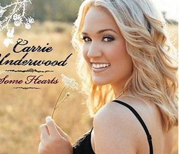

乡村音乐（Country music）是一种当代的流行音乐，起源于美国南部与阿帕拉契山区。乡村音乐的根源可追溯至1920年代，融合了传统民谣音乐、凯尔特音乐、福音音乐及古时音乐。乡村音乐的曲调，一般都很流畅、动听，曲式结构也比较简单。多为歌谣体、二部曲式或三部曲式。
这个名字是20世纪20年代在美国出现的，它的源流很广。那时歌曲的内容，除了表现劳动生活之外，厌恶孤寂的流浪生活，向往温暖、安宁的家园，歌唱甜蜜的爱情以及失恋的痛苦等都有。
1925年，美国田纳西州纳什维尔建立了一家广播电台。他们开办了一个“往昔的歌剧--老乡音 "的专栏节目。邀请了一位名叫杰米・汤普森的81岁的民间歌手演唱，节目受到听众们的热烈欢迎。从此，人们统称这种音乐为"乡村音乐"。乡村音乐成为美国劳动人民最喜爱的音乐形式之一。在美国，"蓝领"指的是下层人，故这种音乐又称"蓝领音乐"。
然而，与音乐本身同样重要的是音乐所包含的内容，而在这一点上，乡村音乐与流行乐、摇滚、说唱乐以及其他流派非常不一样。乡村音乐一般有八大主题：一、爱情；二、失恋；三、牛仔幽默；四、找乐；五、乡村生活方式；六、地区的骄傲；七、家庭；八、上帝与国家。前两个主题绝不是乡村音乐所独有的，但是后六大主题则把乡村音乐与其他的美国流行音乐流派区分开来。简而言之，乡村的人们有他们自己的幽默感；喜欢牛仔风格的疯玩；以一种与城市人很不同的方式生活；以自己所在的乡镇、州、地区为荣；极为重视家庭；不羞于表达宗教情感与爱国情感。这些主题使乡村音乐有别于诸如小甜甜与N-Sync的音乐。
乡村音乐所包含的内容往往最吸引美国南部与西部乡村的白人。作为群体，乡村音乐的听众往往是农民和蓝领，他们通常比美国平均水平穷点儿，在政治与社会问题上也更保守一点。 |